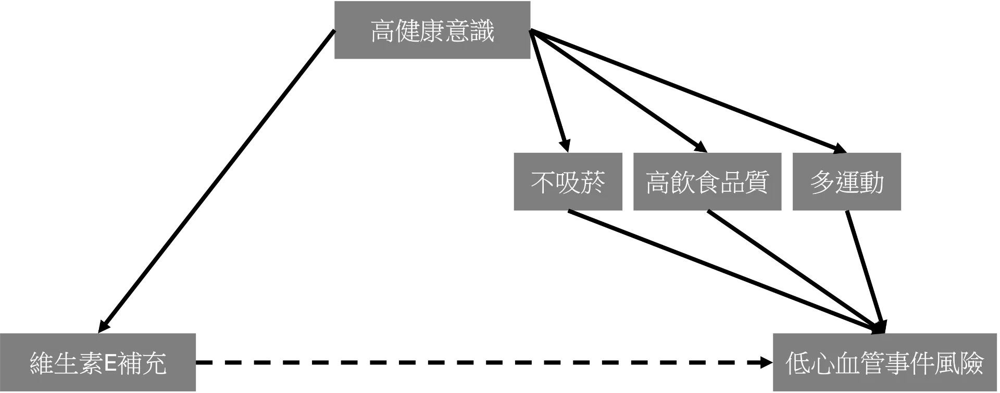
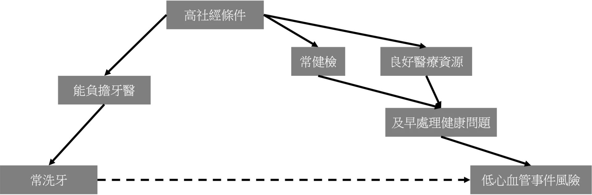
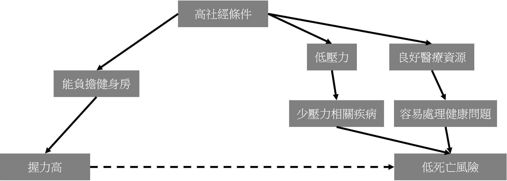

一、從一篇長壽新聞切入
近期一篇新聞報導吸引了我的目光，也催生了這一個系列文。
我們常在健康新聞中看到類似這樣的說法：習慣去做某些行為的人，似乎都比較長壽，因此鼓勵大家也去這麼做。
舉三立新聞網在2026/1/19這篇醫療新聞為例，文中引述某醫師在自己的臉書中提到：「一項追蹤 14 萬人的研究發現，握力每下降5公斤，全因死亡風險上升16%。」「民眾為了健康與長壽，可執行6個習慣：
… 2. 每週 2～3 次阻力訓練（深蹲、硬拉、握力練習），以維持肌肉量」
讀到這些文字時，讀者是否很容易得到一個印象：握力較差的人死亡風險較高，而改善握力或許就能避免這樣的死亡風險？
這些說法不一定錯。走路速度、肌力和平衡能力，確實可能反映一個人的身體功能與整體健康狀態；握力訓練也確實對維持肌肉量、代謝健康與老年功能有幫助。真正需要小心的是，當一則新聞說「某些行為與長壽有關」時，我們很容易在心中把它讀成「做這些行為就會造成長壽」。
如果事情真的這麼簡單，那是否只要普發握力訓練器，大家就能一起長壽？問題當然沒有這麼單純。這正是健康新聞中最常見的證據誤區：「有關」不等於「造成」。
二、從生活實例開始理解
我們可以先用一個生活中的例子，理解為什麼「有關」與「造成」是兩回事。
如果統計一整年的冰淇淋銷量與曬傷人數，可能會發現：冰淇淋賣得越好的時候，曬傷的人數也越多。因此，我們當然可以說，冰淇淋銷量與曬傷人數呈現正相關。可是，我們會因此說「冰淇淋讓人曬傷」嗎？
這看似荒謬的論述，正是最好切入本文主旨的實例：存在相關性不代表存在因果性。更白話而言，就是今天的標題：「有關」不等於「造成」。
冰淇淋銷量好的日子，往往也是烈日當空的日子；而在這樣的天氣裡，人們更可能待在戶外、從事休閒活動，因此曬傷的人數也會增加。
可見，冰淇淋銷量與曬傷人數之間存在相關性是毋庸置疑的，但是這並不代表冰淇淋會導致曬傷。而我們不難發現，日照在這相關性關係之間似乎扮演著某種角色。
三、醫學研究實例一：維生素E與心血管事件
早期觀察性研究曾指出，固定補充維生素E的人，有較低的心血管事件風險。看到這樣的研究結果，很容易讓人以為：補充維他命E可以保護心臟和血管；甚至進一步轉化成行動建議：為了減少心血管事件風險，應該開始補充維生素E。
但是隨後的大型隨機對照研究（證據等級較高，敬請期待後續介紹證據等級的文章）發現，維生素E的補充並沒有明確降低心血管事件風險。
那麼，為什麼我們最一開始會觀察到維生素E固定補充者的心血管風險較低呢？回顧剛剛的冰淇淋案例，我們可否找到類似日照這種在相關性中搞怪的角色呢？
稍加思考，可以想到一個可能的變因：「健康意識」。一個合理的可能解釋是，具有較高健康意識的人，比較可能會主動補充維生素E，而具有較高健康意識的人又比較可能採行其他健康生活習慣，例如不吸菸、高飲食品質、多運動等等。因此，真正讓他們心血管事件風險較低的，可能不是維生素 E 本身，而是這些伴隨而來的健康行為與生活條件。
於是，在資料中看起來，就變成了「維生素 E 補充」與「較低心血管事件風險」相關。這種現象，就是健康使用者偏差（healthy user bias）：某個行為看起來與較好的健康結果有關，但部分原因可能是，會採取這個行為的人，本來就比較健康、比較重視預防，或擁有較多健康資源。

四、醫學研究實例二：洗牙與心血管事件
再舉醫學研究中的一個例子。過往多篇研究曾提出，較常去洗牙的牙周病患者似乎有著較低的心血管事件風險。而這些論文的討論中，也會提出一些可能的生物機制解釋口腔健康與心血管健康的關係，例如可能因為牙周病與發炎有關，而洗牙治療能夠控制牙周病，進一步控制發炎，進而減少身體負擔以及心血管事件風險。這些機制乍聽下合理，實際上也是可能存在的（請注意，此處我並非在否定這些研究所觀察到的事實），不過從實證醫學的角度，我們可能還是得要對這個結論跟機制有所保留。
有了這些觀察性研究的初步結果，科學家接著開始設計隨機對照試驗，試圖以更高證據等級的研究方式驗證其結論。PAVE試驗（Periodontitis and Vascular Events）納入303名牙周病患者，比較洗牙刮治（SRP）與常規照護對心血管事件復發的影響。結果發現兩組之間的全身性發炎指標（hs-CRP）並無統計上顯著差異。PREMIERS試驗（Periodontal Disease Treatment After Stroke or Transient Ischemic Attack）納入280名中風或短暫性腦缺血發作合併中重度牙周病患者，隨機分配接受密集或標準牙周治療。12個月追蹤期間，主要終點（死亡、心肌梗塞或復發性中風）在兩組間亦無統計學差異。
那麼，為什麼觀察性研究中常看到口腔健康與心血管風險之間的關聯，但隨機試驗卻不一定能清楚證明治療可以降低心血管事件呢？
其中一個可能原因，是口腔健康本身也受到許多生活條件影響。口腔健康較好、能規律接受牙科照護的人，可能同時具有較好的社會經濟條件、較穩定的醫療可近性，進而更容易及早處理高血壓、高血脂與糖尿病等心血管危險因子。
換句話說，口腔健康與較低冠心病風險之間的關聯，可能部分反映的是整體健康行為、社經條件與醫療資源的差異，而不一定全都是口腔照護本身的直接效果。

五、此現象背後的流行病學知識：相關、因果、混雜因子
舉了這麼多例子，我們可以開始來介紹流行病學中的重要名詞與學理知識了：什麼是相關性？什麼是因果性？什麼是混雜因子？
相關性（association）：兩個變項在資料中呈現統計上的關聯。例如暴露組與非暴露組的疾病風險不同，或是高飲食品質組與低飲食品質組的死亡風險差異。在醫學研究中，相關性可以用很多方式表達，例如 risk difference、relative risk、odds ratio、hazard ratio、correlation coefficient 等，這些專有名詞，之後會在流行病學教學系列文中做更詳細的介紹。但重點是：相關性本身不代表因果性。讀完上面幾段的讀者一定已經被強調多次了：隨機對照試驗較能判斷因果關係；而多數觀察性研究，例如長期追蹤大型族群的研究，通常只能辨識出相關性。總之，相關性告訴我們「兩件事一起出現或共同變動」，但不直接告訴我們「其中一件事造成另一件事」。
因果性（causality）：白話來說，是指如果我們改變其中一件事，另一件事的發生機率或程度也會因此改變，這兩件事情就存在因果性。因此，因果推論關心的是：觀察到的差異是否真的來自暴露本身，而不是來自兩組人在其他特徵上的差異。用更流行病學的語言說，因果性通常牽涉一個反事實問題：同一群人如果接受暴露 A，結果會如何？如果不接受暴露 A，結果又會如何？因此，研究設計與統計方法的核心任務，就是盡可能建立一個合理的比較。而隨機分配的過程可以消除已知與未知的混雜因子，因此設計良好的隨機對照試驗（randomized controlled trial, RCT）被視為評估因果關係的黃金標準。
混雜因子（confounding factor）：一個與暴露有關、也會影響結果，但不位在暴露到結果因果路徑上的第三變項；它會扭曲我們看到的 exposure–outcome association，使研究者誤以為暴露與結果之間存在因果關係，或低估、誇大、甚至反轉真正的關係。以剛剛的例子來說，日曬、健康意識、社經地位就是個別案例中的confounding factor，而他們製造出的假象就叫做confounding。Confounding 是觀察性研究中「有相關」不等於「有因果」最常見的成因之一。其他常見的機制如選擇偏誤（selection bias）與反向因果（reverse causation），我們將在後續文章中分別討論。至於 confounding 的正式定義，牽涉到流行病學中的 exchangeability，將於更進階的系列文中完整闡述。

六、「有相關」與「降低風險」：觀察性研究的語言邊界
理解了相關性、因果性與混雜因子的概念，我們可以把它轉成一個非常實際的閱讀習慣：怎麼判斷一篇報導或論文，在語言上用對了嗎？
在觀察性研究中，研究者常用 hazard ratio（HR）來表達兩組之間的風險差異。如果一篇追蹤飲食與疾病的世代研究報告了 HR = 0.86，正確的表述方式是：
這個飲食型態，與約 14% 較低的風險相關。
而不是：
這個飲食型態，可以降低 14% 的風險。
兩種說法數字相同，但含義截然不同。「降低」是因果語言，它預設了一件事：如果你真的改變這個行為，你的風險就會跟著改變。「相關」只描述在這批資料裡觀察到的型態，對於干預能否改變結局，保持開放。
這個語言上的區分，不是學術咬文嚼字，而是反映了真正重要的不確定性。如果觀察性研究中還有沒被完整控制的混雜因子，用因果語言就等於在一個尚未確認的推論上，多加了一層確定性——讀者很容易把「和風險較低有相關」直接讀成「這樣做，就能降低風險」。
相反地，在設計嚴謹的隨機對照試驗中，我們確實可以說「降低」。因為隨機分配讓兩組在已知與未知的特徵上都具有可比性，結局的差異確實有較強的理由被解讀為介入身造成的效果，因此說「使中風風險降低約 25%」是語言上合適的。而如果同樣的數字來自一篇觀察性研究——「習慣服用某種補充品的人，中風率比不服用者低了 25%」——則只能說「相關」，因為這群人本來就可能有更好的健康習慣或更充足的醫療資源（就像本文前面的維生素 E 例子所示）。
因此，讀健康新聞或醫學論文時，有一個簡單的語言檢查：報導用的是因果語言，但引用的是觀察性研究嗎？ 如果是，就要提高警覺，因為語言已經走在證據的前面了。
七、回到長壽新聞
回到本文最初提到的長壽新聞，我們應該如何解讀？
首先，握力、步速、平衡能力、牙齒健康與死亡風險有關，並不代表這些因素一定是死亡風險的直接原因。它們很可能是重要的健康線索，但健康線索不等於因果證明。
我們可以練習看看，能不能夠找到一些可能在此研究中扮演混雜因子角色的變項。例如，文章中提及牙齒不好與死亡的關係，不能排除文中所提到的牙齒不好導致無法攝取蛋白質進而影響死亡風險這個理由，但是這個推論過於擴張、悖離證據。而其中有一個可能的混雜因子，我提出可能是吸菸。吸菸者的口腔健康狀況通常較差，也有較高的心血管疾病、癌症與死亡風險。因此，吸菸可能同時影響「牙齒健康」與「死亡風險」，符合我們前面對混雜因子的定義。換句話說，部分看起來像是牙齒健康與死亡風險之間的關聯，可能其實反映了吸菸這個共同因素的影響。
同理，握力較佳的人有比較低的死亡風險，也不一定代表「訓練握力」本身就能降低死亡風險。可能是因為這些人平常有較佳的社經地位，可以支持他們常去健身房訓練握力，而這個社經地位也讓他們享受較好的醫療資源，或是有較低的生活壓力而較免於壓力導致的疾病。因此，若是藉由這篇文章直接主張握力訓練可以降低死亡風險，一樣是對於證據掌握不佳的過度詮釋。

八、結論
再次強調，本文並不是要主張運動、肌力訓練或口腔牙齒健康不重要。相反地，這些因素都可能與健康老化、疾病預防與生活品質密切相關。
真正需要小心的是：我們如何透過流行病學與實證醫學的思維，避免把「有相關」直接讀成「會造成」。對撰寫健康新聞的媒體工作者、協助大眾解讀醫療資訊的醫事人員，以及每一位關心健康議題的讀者來說，這都是值得留意的細節。
證據思維的價值，不是全盤接受所有研究結果，也不是反射性地懷疑一切，而是知道一個研究結果能支持什麼、不能支持什麼，以及它離真正的因果結論還有多遠。
結論是：
相關性是理解健康風險的起點，但不是因果推論的終點。